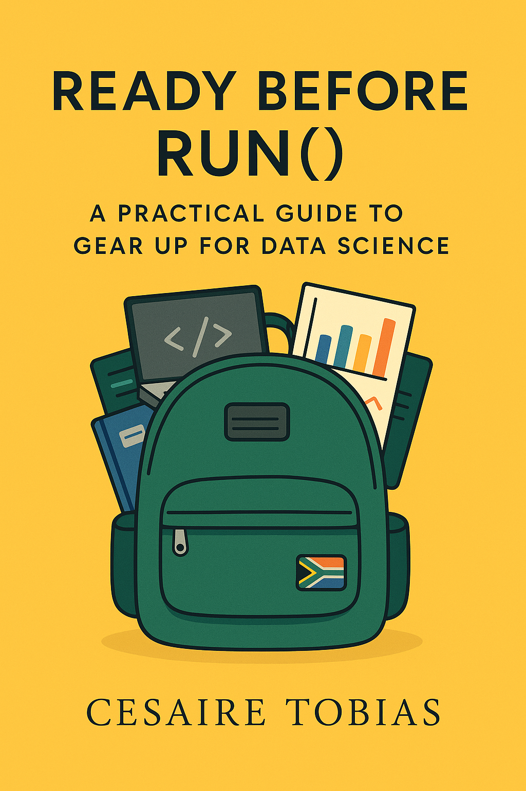

Ready Before Run()
A Practical Guide to Gear Up for Data Science
Preface

This is a Quarto book.
To learn more about Quarto books visit https://quarto.org/docs/books.
Welcome
Welcome to “Ready Before Run(): A Practical Guide to Gear Up for Data Science.” This guide is designed for readers from diverse backgrounds - economists, statisticians, engineers, and beyond - who are interested in the data scientists’ toolkit but don’t necessarily have any computer science foundations.
If you’ve made it this far, you likely already possess strong analytical skills from your domain. What you may lack is familiarity with the technical infrastructure that supports modern data science work. Just as a chef needs a well-equipped kitchen before creating culinary masterpieces, data scientists need properly configured tools before they can transform data into insights.
This guide will walk you through setting up the essential components of a data science environment—from programming languages and version control to visualization tools and cloud platforms. By the end of this journey, you’ll have a robust technical foundation that will allow you to spend less time battling your infrastructure and more time materialising your ideas.
Preface
As someone who transitioned into data science from a finance and economics background, I understand the challenges of navigating the seemingly endless array of tools, platforms, and technologies that make up the modern data science ecosystem. The learning curve can be steep, and it’s often difficult to know where to begin.
This book grew out of my own experience and the recognition that many aspiring data scientists struggle not with analytical concepts, but with the technical infrastructure needed to apply those concepts effectively. While there are countless resources teaching statistical methods, machine learning algorithms, and data manipulation techniques, relatively few focus on the foundational setup that makes this work possible.
“Ready Before Run()” fills this gap by providing clear, practical guidance for establishing your data science workspace. Rather than diving immediately into coding complexities, we’ll first ensure you have the proper environment configured—allowing you to build technical confidence before tackling analytical challenges.
The book is structured as a step-by-step guide, beginning with basic command line operations and progressing through programming language setup, version control, visualization tools, and more advanced topics like containerization and cloud computing. Each chapter builds on the previous one, creating a comprehensive foundation for your data science journey.
I’ve intentionally focused on open-source and freely available tools to ensure accessibility for all readers. The skills you’ll develop are platform-agnostic and transferable across different operating systems and work environments.
My hope is that this book serves as the resource I wish I’d had when starting my own path into data science—eliminating technical barriers so you can concentrate on developing your analytical expertise and making meaningful contributions in your field.
So, let’s gear up for your next data science project!
Cesaire Tobias
LinkedIn